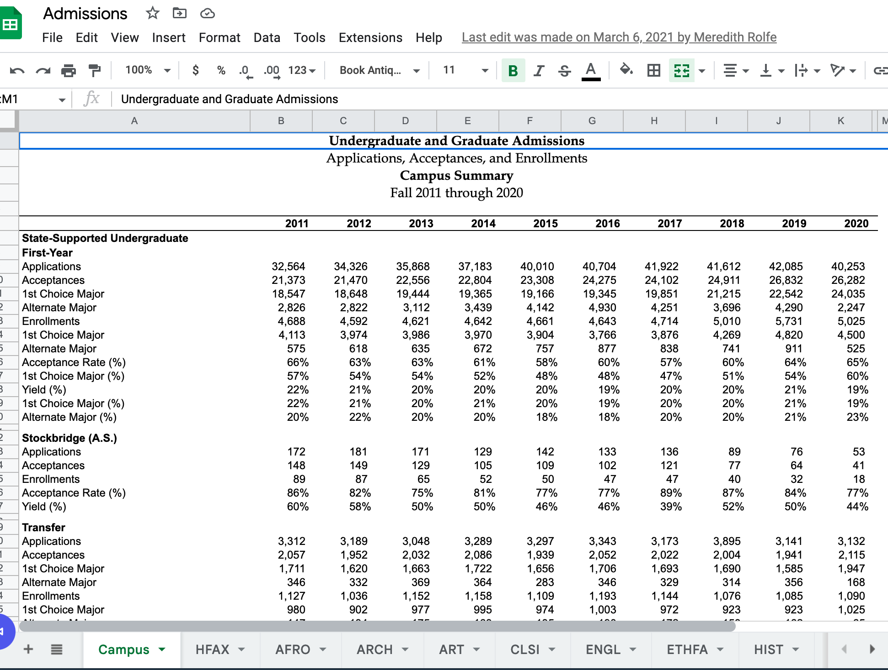

library(tidyverse)
library(googlesheets4)
knitr::opts_chunk$set(echo = TRUE)UMass Admissions Data
reading data
Reading in multiple sheets with two categories
UMass Admissions Data
Historical UMass admissions data, and data on the number of majors, are available in excel format from the University Analytics and Institutional Research Office. For this example, I transferred the excel workbooks into a google spreadsheet to read in using googlesheets4.

First, we will set up the base URLs to use to access the data from google sheets. You will need to change this to access your own googlesheet or excel spreadsheet. (and modify subsequent “read” commands.)
admissions.url <- gs4_get("https://docs.google.com/spreadsheets/d/1t-oEWdYCJndOSSW8dtn1dBC9U5-2KzjmL8cgbcPwDYs/edit?usp=sharing")Error in `gs4_auth()`:
! Can't get Google credentials.
ℹ Are you running googlesheets4 in a non-interactive session? Consider:
• Call `gs4_deauth()` to prevent the attempt to get credentials.
• Call `gs4_auth()` directly with all necessary specifics.
ℹ See gargle's "Non-interactive auth" vignette for more details:
ℹ <https://gargle.r-lib.org/articles/non-interactive-auth.html>majors.url <-gs4_get("https://docs.google.com/spreadsheets/d/1sezSHYMsNqjJSzteVD1cogRFb0o0RdnuBilgZ5Ul4c0/edit?usp=sharing")Error in `gs4_auth()`:
! Can't get Google credentials.
ℹ Are you running googlesheets4 in a non-interactive session? Consider:
• Call `gs4_deauth()` to prevent the attempt to get credentials.
• Call `gs4_auth()` directly with all necessary specifics.
ℹ See gargle's "Non-interactive auth" vignette for more details:
ℹ <https://gargle.r-lib.org/articles/non-interactive-auth.html>Create list of colleges and depts.
As can be viewed above, each workbook contains multiple sheets with the abbreviated name of the college or dept as the sheet name. Therefore, as a starting point for reading in the sheets, we need a list of them - much as we have done in the past using sheet_names. The difference this time is that we also need to recover which college each department belongs to, which we can guess based on the order in which the departments appear (after the colleges, whose abbreviations all end in “X”.) We need to remove the overall Campus totals and only keep the individual Department pages, but also be sure to retain the additional College column indicated which college each department belongs to.
dept_names<-sheet_names(admissions.url)Error in as_sheets_id(ss): object 'admissions.url' not foundcolleges <- c(dept_names[str_ends(dept_names, "X")])Error in eval(expr, envir, enclos): object 'dept_names' not foundcollegesError in eval(expr, envir, enclos): object 'colleges' not founddept_names<-dept_names[dept_names!="Campus"]Error in eval(expr, envir, enclos): object 'dept_names' not found#find the position of colleges (depts follow)
temp<-which(str_ends(dept_names, "X"))Error in stri_detect_regex(string, pattern, negate = negate, opts_regex = opts(pattern)): object 'dept_names' not foundtemp<-temp[-1]-temp[-length(temp)]Error in eval(expr, envir, enclos): object 'temp' not foundtemp<- c(temp, 5)Error in eval(expr, envir, enclos): object 'temp' not founddepts<-tibble(college = unlist(map2(colleges, temp, rep)),
dept = dept_names)%>%
filter(!str_ends(dept, "X"))Error in map2(colleges, temp, rep): object 'colleges' not founddeptsError in eval(expr, envir, enclos): object 'depts' not foundRead in dept. information
The general format of a department page can vary based on which programs are offered by the department. For example, we can see from the screenshot above that there are four categories of State-Supported Undergraduate admissions: First-Year, Stockbridge (A.S.), Transfer, Post-graduate; two categories of State-Supported Graduate admissions: Master’s and Doctoral; and three categories of University Without Walls (online or CPE) admissions: Undergraduate (Transfer and Post-graduate), Master’s, and Doctoral. Essentially, we have four critical pieces of information in the first column of each department sheet.
- mode: Campus or Online (UWW)
- degree: Undergraduate, Master’s or Doctoral
- ug_type: First-Year, Transfer, Stockbridge, or Post-graduate
- count (Applications, Acceptances, and Enrollments)
Note that both acceptance rate and yield could be easily calculated from the first three statistics provided, or could be kept. Our goal now will be to develop a function to read in data from a single sheet, and reshape it so that the counts are variables while the years (currently presented as column names) are in a column. This reshaping will make it easier to caluculate growth rates and other overtime information.
dept_info<-read_sheet(admissions.url$spreadsheet_id,
sheet = depts$dept[1], skip=6,
col_names = c("X1", 2011:2020))Error in as_sheets_id(ss): object 'admissions.url' not foundend <- grep("Definitions", dept_info$X1)-1Error in is.factor(x): object 'dept_info' not founddept_info <- dept_info[1:end,]%>%
filter(!is.na(X1))Error in filter(., !is.na(X1)): object 'dept_info' not founddept_infoError in eval(expr, envir, enclos): object 'dept_info' not foundWe now have a condensed data set read in with the correct column names, but need to break X1 into multiple columns with the correct information.
mode_terms <-c("State-Supported Undergraduate",
"State-Supported Graduate",
"University Without Walls")
degree_terms<-c("State-Supported Undergraduate",
"Master's", "Doctoral")
ug_cats<-c("First-Year", "Stockbridge (A.S.)", "Transfer",
"Post-graduate")
counts<-c("Applications", "Enrollments", "Acceptances")
dept_info<-dept_info%>%
mutate(dept = depts$dept[1],
mode = ifelse(X1 %in% mode_terms, X1, NA),
degree = ifelse(X1 %in% degree_terms, X1, NA),
ug_cats = ifelse(X1 %in% ug_cats, X1, NA)
)%>%
fill(mode, degree, ug_cats)%>%
mutate(mode = ifelse(str_detect(mode, "State"),
"Campus", "Online"),
degree = ifelse(str_detect(degree, "State"),
"Undergraduate", degree),
ug_cats = ifelse(str_detect(degree, "Undergraduate"),
ug_cats, NA),
counts = ifelse(X1%in%counts, X1, NA))%>%
filter(!is.na(counts))%>%
select(-X1)Error in mutate(., dept = depts$dept[1], mode = ifelse(X1 %in% mode_terms, : object 'dept_info' not founddept_infoError in eval(expr, envir, enclos): object 'dept_info' not foundNow, this is looking much better! Now our final step is to swap the rows and columns by using both pivot_longer and pivot_wider.
dept_info<-dept_info%>%
pivot_longer(cols=starts_with("20"),
names_to = "year",
values_to = "value")%>%
pivot_wider(id_cols = c(dept, mode, degree, ug_cats, year),
names_from = "counts",
values_from = "value")Error in pivot_longer(., cols = starts_with("20"), names_to = "year", : object 'dept_info' not founddept_infoError in eval(expr, envir, enclos): object 'dept_info' not foundTa da! We have all the information read in and the categorical variables are working and in the correct order. Now we can write a quick function using the steps above, and purrr:map it into a dataframe!
read.programs <-function(sheet.url= admissions.url,
dept.name){
dept_info<-read_sheet(admissions.url$spreadsheet_id,
sheet = dept.name,
range="A7:K85",
col_names = c("X1", 2011:2020))
end <- grep("Definitions", dept_info$X1)-1
dept_info <- dept_info[1:end,]%>%
filter(!is.na(X1))
dept_info<-dept_info%>%
mutate(dept = dept.name,
mode = ifelse(X1 %in% mode_terms, X1, NA),
degree = ifelse(X1 %in% degree_terms, X1, NA),
ug_cats = ifelse(X1 %in% ug_cats, X1, NA)
)%>%
fill(mode, degree, ug_cats)%>%
mutate(mode = ifelse(str_detect(mode, "State"),
"Campus", "Online"),
degree = ifelse(str_detect(degree, "State"),
"Undergraduate", degree),
ug_cats = ifelse(str_detect(degree, "Undergraduate"),
ug_cats, NA),
counts = ifelse(X1%in%counts, X1, NA))%>%
filter(!is.na(counts))%>%
select(-X1)
dept_info%>%
pivot_longer(cols=starts_with("20"),
names_to = "year",
values_to = "value")%>%
pivot_wider(id_cols = c(dept, mode, degree, ug_cats, year),
names_from = "counts",
values_from = "value")
}
admissions<-map_dfr(depts$dept,
~read.programs(admissions.url, .x))Error in map(.x, .f, ...): object 'depts' not foundadmissions_orig<-admissions%>%
left_join(depts)%>%
relocate(college, .before = dept)Error in left_join(., depts): object 'admissions' not foundadmissions_origError in eval(expr, envir, enclos): object 'admissions_orig' not foundAnd now we have all of the admissions data in a single R object, with the ability to easily filter and group by the various categorical information from the original sheets - including the type of program, mode, degree, department, and college.
Yield rate and accept rate can be recalulated easily, as can lags or growth using the following information.
admissions<-admissions_orig%>%
mutate(enroll_chg3yr = Enrollments - lag(Enrollments, n=3),
admit_rate = Acceptances/Applications,
yield_rate = Enrollments/Acceptances)Error in mutate(., enroll_chg3yr = Enrollments - lag(Enrollments, n = 3), : object 'admissions_orig' not foundadmissionsError in eval(expr, envir, enclos): object 'admissions' not found